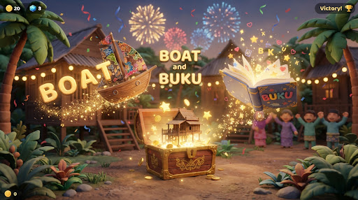

auto_awesome
🎉 KATA AJIB BERJAYA DICANTUM! 🏆
Syabas! Perkataan ‘Boat’ & ‘Buku’ Lengkap!
Wira Adam berjaya menguasai dwibahasa Bahasa Melayu & English CEFR Tahun 1!
star
Fonik Sahih!
star
Dwibahasa
star
Wira Bahasa

hotel_class
Kemenangan Sempurna!
sailing
Bot Nelayan
featured_seasonal_and_gifts
Peti Terbuka!
auto_stories
Wakaf Buku
spellcheck
100% Menguasai
Rumus Kejayaan Fonik
English CEFR
B · O · A · T
/b/ - /əʊ/ - /t/ = BOAT (Kapal Layar)
check_circle Dermaga Bay berjaya dipasang dengan bot layar batik tradisi!
Bahasa Melayu
BU + KU
Suku Kata Terbuka: [bu] + [ku] = BUKU
check_circle Koleksi hikayat Wakaf Rimba bercahaya & dibuka kepada desa!
verified
Standard Kurikulum KSSR Tahap 1 Dicapai Penuh
lock_open_right
4 Hadiah Baru
Peti Khazanah Desa Terbuka!
foundation
Miniatur Dermaga
Plot Kampung Baru
hotel_class
+200 Bintang
Mata Kecemerlangan
monetization_on
+350 Syiling
Bahan Pembinaan
military_tech
Linguis Cilik
Trofi Profil Wira
TK
SK
KT
Tok Ketua & Warga Desa
Sorakan Riang Kampung Wira
“Luar biasa anakanda Adam! Gabungan ilmu Bahasa Melayu di Wakaf Buku dan English di Dermaga Bay telah menghadiahkan sebuah Dermaga Bot Nelayan Tradisional untuk desa kita! Mari letak bangunan ini di peta kampung!”